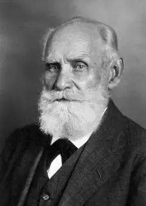
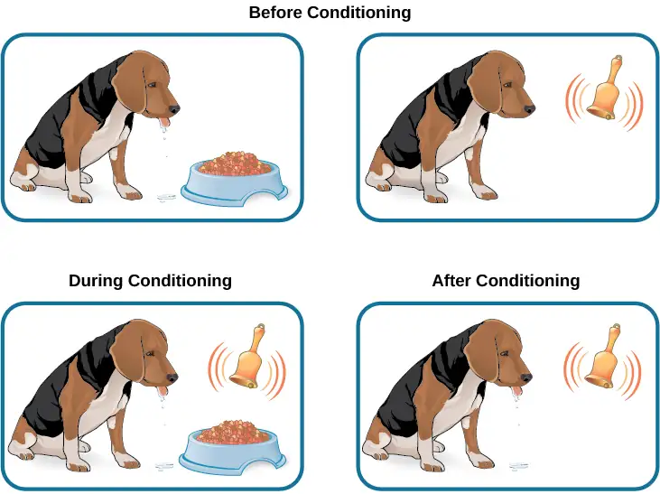
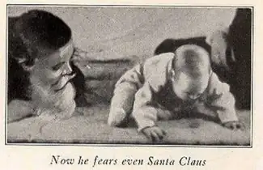
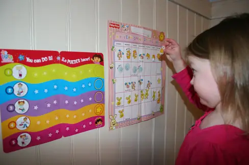
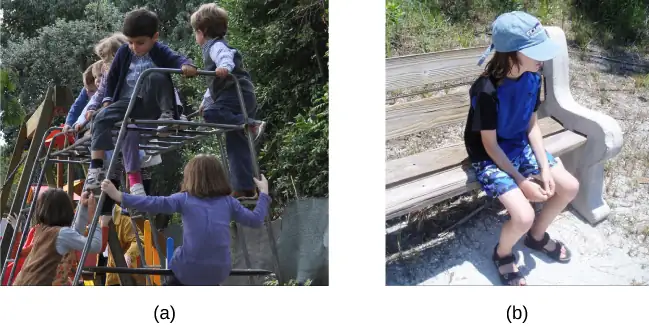
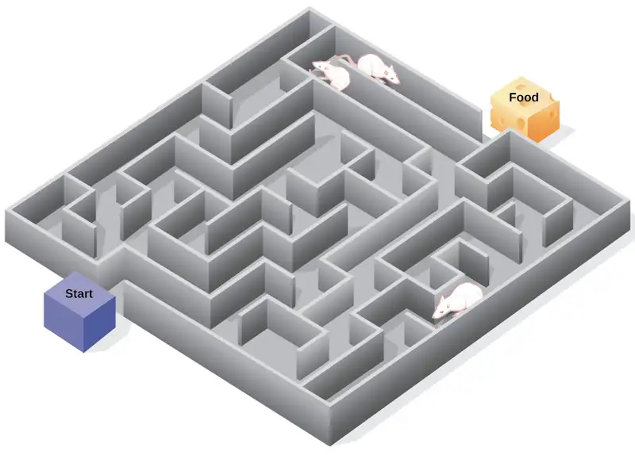
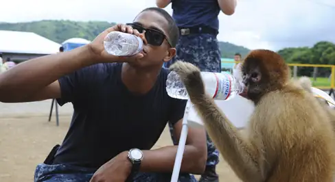
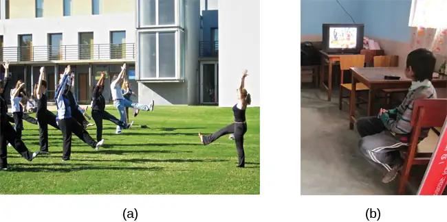

Chapter 6: Learning¶
Introduction¶
The summer sun shines brightly on a deserted stretch of beach. Suddenly, a tiny grey head emerges from the sand, then another and another. Soon the beach is teeming with loggerhead sea turtle hatchlings (Figure 6.1). Although only minutes old, the hatchlings know exactly what to do. Their flippers are not very efficient for moving across the hot sand, yet they continue onward, instinctively. Some are quickly snapped up by gulls circling overhead and others become lunch for hungry ghost crabs that dart out of their holes. Despite these dangers, the hatchlings are driven to leave the safety of their nest and find the ocean.
Not far down this same beach, Ben and his son, Julian, paddle out into the ocean on surfboards. A wave approaches. Julian crouches on his board, then jumps up and rides the wave for a few seconds before losing his balance. He emerges from the water in time to watch his father ride the face of the wave.
Unlike baby sea turtles, which know how to find the ocean and swim with no help from their parents, we are not born knowing how to swim (or surf). Yet we humans pride ourselves on our ability to learn. In fact, over thousands of years and across cultures, we have created institutions devoted entirely to learning. But have you ever asked yourself how exactly it is that we learn? What processes are at work as we come to know what we know? This chapter focuses on the primary ways in which learning occurs.
6.1 What Is Learning?¶
Learning Objectives
By the end of this section, you will be able to:
- Explain how learned behaviors are different from instincts and reflexes
- Define learning
- Recognize and define three basic forms of learning—classical conditioning, operant conditioning, and observational learning
Birds build nests and migrate as winter approaches. Infants suckle for nourishment. Dogs shake water off wet fur. Salmon swim upstream to spawn, and spiders spin intricate webs. What do these seemingly unrelated behaviors have in common? They all are unlearned behaviors. Both instincts and reflexes are innate (unlearned) behaviors that organisms are born with. Reflexes are a motor or neural reaction to a specific stimulus in the environment. They tend to be simpler than instincts, involve the activity of specific body parts and systems (e.g., the knee-jerk reflex and the contraction of the pupil in bright light), and involve more primitive centers of the central nervous system (e.g., the spinal cord and the medulla). In contrast, instincts are innate behaviors that are triggered by a broader range of events, such as maturation and the change of seasons. They are more complex patterns of behavior, involve movement of the organism as a whole (e.g., sexual activity and migration), and involve higher brain centers.
Both reflexes and instincts help an organism adapt to its environment and do not have to be learned. For example, every healthy human baby has a sucking reflex, present at birth. Babies are born knowing how to suck on a nipple, whether artificial (from a bottle) or human. Nobody teaches the baby to suck, just as no one teaches a sea turtle hatchling to move toward the ocean. Learning, like reflexes and instincts, allows an organism to adapt to its environment. But unlike instincts and reflexes, learned behaviors involve change and experience: learning is a relatively permanent change in behavior or knowledge that results from experience. In contrast to the innate behaviors discussed above, learning involves acquiring knowledge and skills through experience. Looking back at our surfing scenario, Julian will have to spend much more time training with his surfboard before he learns how to ride the waves like his father.
Learning to surf, as well as any complex learning process (e.g., learning about the discipline of psychology), involves a complex interaction of conscious and unconscious processes. Learning has traditionally been studied in terms of its simplest components—the associations our minds automatically make between events. Our minds have a natural tendency to connect events that occur closely together or in sequence. Associative learning occurs when an organism makes connections between stimuli or events that occur together in the environment. You will see that associative learning is central to all three basic learning processes discussed in this chapter; classical conditioning tends to involve unconscious processes, operant conditioning tends to involve conscious processes, and observational learning adds social and cognitive layers to all the basic associative processes, both conscious and unconscious. These learning processes will be discussed in detail later in the chapter, but it is helpful to have a brief overview of each as you begin to explore how learning is understood from a psychological perspective.
In classical conditioning, also known as Pavlovian conditioning, organisms learn to associate events—or stimuli—that repeatedly happen together. We experience this process throughout our daily lives. For example, you might see a flash of lightning in the sky during a storm and then hear a loud boom of thunder. The sound of the thunder naturally makes you jump (loud noises have that effect by reflex). Because lightning reliably predicts the impending boom of thunder, you may associate the two and jump when you see lightning. Psychological researchers study this associative process by focusing on what can be seen and measured—behaviors. Researchers ask if one stimulus triggers a reflex, can we train a different stimulus to trigger that same reflex? In operant conditioning, organisms learn, again, to associate events—a behavior and its consequence (reinforcement or punishment). A pleasant consequence encourages more of that behavior in the future, whereas a punishment deters the behavior. Imagine you are teaching your dog, Hodor, to sit. You tell Hodor to sit, and give him a treat when he does. After repeated experiences, Hodor begins to associate the act of sitting with receiving a treat. He learns that the consequence of sitting is that he gets a doggie biscuit (Figure 6.2). Conversely, if the dog is punished when exhibiting a behavior, it becomes conditioned to avoid that behavior (e.g., receiving a small shock when crossing the boundary of an invisible electric fence).
Observational learning extends the effective range of both classical and operant conditioning. In contrast to classical and operant conditioning, in which learning occurs only through direct experience, observational learning is the process of watching others and then imitating what they do. A lot of learning among humans and other animals comes from observational learning. To get an idea of the extra effective range that observational learning brings, consider Ben and his son Julian from the introduction. How might observation help Julian learn to surf, as opposed to learning by trial and error alone? By watching his father, he can imitate the moves that bring success and avoid the moves that lead to failure. Can you think of something you have learned how to do after watching someone else?
All of the approaches covered in this chapter are part of a particular tradition in psychology, called behaviorism, which we discuss in the next section. However, these approaches do not represent the entire study of learning. Separate traditions of learning have taken shape within different fields of psychology, such as memory and cognition, so you will find that other chapters will round out your understanding of the topic. Over time these traditions tend to converge. For example, in this chapter you will see how cognition has come to play a larger role in behaviorism, whose more extreme adherents once insisted that behaviors are triggered by the environment with no intervening thought.
6.2 Classical Conditioning¶
Learning Objectives
By the end of this section, you will be able to:
- Explain how classical conditioning occurs
- Summarize the processes of acquisition, extinction, spontaneous recovery, generalization, and discrimination
Does the name Ivan Pavlov ring a bell? Even if you are new to the study of psychology, chances are that you have heard of Pavlov and his famous dogs.
Pavlov (1849–1936), a Russian scientist, performed extensive research on dogs and is best known for his experiments in classical conditioning (Figure 6.3). As we discussed briefly in the previous section, classical conditioning is a process by which we learn to associate stimuli and, consequently, to anticipate events.

Pavlov came to his conclusions about how learning occurs completely by accident. Pavlov was a physiologist, not a psychologist. Physiologists study the life processes of organisms, from the molecular level to the level of cells, organ systems, and entire organisms. Pavlov’s area of interest was the digestive system (Hunt, 2007). In his studies with dogs, Pavlov measured the amount of saliva produced in response to various foods. Over time, Pavlov (1927) observed that the dogs began to salivate not only at the taste of food, but also at the sight of food, at the sight of an empty food bowl, and even at the sound of the laboratory assistants' footsteps. Salivating to food in the mouth is reflexive, so no learning is involved. However, dogs don’t naturally salivate at the sight of an empty bowl or the sound of footsteps.
These unusual responses intrigued Pavlov, and he wondered what accounted for what he called the dogs' “psychic secretions” (Pavlov, 1927). To explore this phenomenon in an objective manner, Pavlov designed a series of carefully controlled experiments to see which stimuli would cause the dogs to salivate. He was able to train the dogs to salivate in response to stimuli that clearly had nothing to do with food, such as the sound of a bell, a light, and a touch on the leg. Through his experiments, Pavlov realized that an organism has two types of responses to its environment: (1) unconditioned (unlearned) responses, or reflexes, and (2) conditioned (learned) responses.
In Pavlov’s experiments, the dogs salivated each time meat powder was presented to them. The meat powder in this situation was an unconditioned stimulus (UCS): a stimulus that elicits a reflexive response in an organism. The dogs’ salivation was an unconditioned response (UCR): a natural (unlearned) reaction to a given stimulus. Before conditioning, think of the dogs’ stimulus and response like this:
In classical conditioning, a neutral stimulus is presented immediately before an unconditioned stimulus. Pavlov would sound a tone (like ringing a bell) and then give the dogs the meat powder (Figure 6.4). The tone was the neutral stimulus (NS), which is a stimulus that does not naturally elicit a response. Prior to conditioning, the dogs did not salivate when they just heard the tone because the tone had no association for the dogs.
When Pavlov paired the tone with the meat powder over and over again, the previously neutral stimulus (the tone) also began to elicit salivation from the dogs. Thus, the neutral stimulus became the conditioned stimulus (CS), which is a stimulus that elicits a response after repeatedly being paired with an unconditioned stimulus. Eventually, the dogs began to salivate to the tone alone, just as they previously had salivated at the sound of the assistants’ footsteps. The behavior caused by the conditioned stimulus is called the conditioned response (CR). In the case of Pavlov’s dogs, they had learned to associate the tone (CS) with being fed, and they began to salivate (CR) in anticipation of food.

Link to Learning
View this video about Pavlov and his dogs to learn more.
Real World Application of Classical Conditioning¶
How does classical conditioning work in the real world? Consider the case of Moisha, who was diagnosed with cancer. When she received her first chemotherapy treatment, she vomited shortly after the chemicals were injected. In fact, every trip to the doctor for chemotherapy treatment shortly after the drugs were injected, she vomited. Moisha’s treatment was a success and her cancer went into remission. Now, when she visits her oncologist's office every 6 months for a check-up, she becomes nauseous. In this case, the chemotherapy drugs are the unconditioned stimulus (UCS), vomiting is the unconditioned response (UCR), the doctor’s office is the conditioned stimulus (CS) after being paired with the UCS, and nausea is the conditioned response (CR). Let's assume that the chemotherapy drugs that Moisha takes are given through a syringe injection. After entering the doctor's office, Moisha sees a syringe, and then gets her medication. In addition to the doctor's office, Moisha will learn to associate the syringe with the medication and will respond to syringes with nausea. This is an example of higher-order (or second-order) conditioning, when the conditioned stimulus (the doctor's office) serves to condition another stimulus (the syringe). It is hard to achieve anything above second-order conditioning. For example, if someone rang a bell every time Moisha received a syringe injection of chemotherapy drugs in the doctor's office, Moisha likely will never get sick in response to the bell.
Consider another example of classical conditioning. Let’s say you have a cat named Tiger, who is quite spoiled. You keep her food in a separate cabinet, and you also have a special electric can opener that you use only to open cans of cat food. For every meal, Tiger hears the distinctive sound of the electric can opener (“zzhzhz”) and then gets her food. Tiger quickly learns that when she hears “zzhzhz” she is about to get fed. What do you think Tiger does when she hears the electric can opener? She will likely get excited and run to where you are preparing her food. This is an example of classical conditioning. In this case, what are the UCS, CS, UCR, and CR?
What if the cabinet holding Tiger’s food becomes squeaky? In that case, Tiger hears “squeak” (the cabinet), “zzhzhz” (the electric can opener), and then she gets her food. Tiger will learn to get excited when she hears the “squeak” of the cabinet. Pairing a new neutral stimulus (“squeak”) with the conditioned stimulus (“zzhzhz”) is called higher-order conditioning, or second-order conditioning. This means you are using the conditioned stimulus of the can opener to condition another stimulus: the squeaky cabinet (Figure 6.5). It is hard to achieve anything above second-order conditioning. For example, if you ring a bell, open the cabinet (“squeak”), use the can opener (“zzhzhz”), and then feed Tiger, Tiger will likely never get excited when hearing the bell alone.
![A diagram is labeled “Higher-Order / Second-Order Conditioning” and has three rows. The first row shows an electric can opener labeled “conditioned stimulus” followed by a plus sign and then a dish of food labeled “unconditioned stimulus,” followed by an equal sign and a picture of a salivating cat labeled “unconditioned response.” The second row shows a squeaky cabinet door labeled “second-order stimulus” followed by a plus sign and then an electric can opener labeled “conditioned stimulus,” followed by an equal sign and a picture of a salivating cat labeled “conditioned response.” The third row shows a squeaky cabinet door labeled “second-order stimulus” followed by an equal sign and a picture of a salivating cat labeled “conditioned response.”](img/cnx-psych-06-02-secondordrn.webp)
Everyday Connection: Classical Conditioning at Stingray City
Kate and her spouse recently vacationed in the Cayman Islands, and booked a boat tour to Stingray City, where they could feed and swim with the southern stingrays. The boat captain explained how the normally solitary stingrays have become accustomed to interacting with humans. About 40 years ago, people began to clean fish and conch (unconditioned stimulus) at a particular sandbar near a barrier reef, and large numbers of stingrays would swim in to eat (unconditioned response) what the people threw into the water; this continued for years. By the late 1980s, word of the large group of stingrays spread among scuba divers, who then started feeding them by hand. Over time, the southern stingrays in the area were classically conditioned much like Pavlov’s dogs. When they hear the sound of a boat engine (neutral stimulus that becomes a conditioned stimulus), they know that they will get to eat (conditioned response).
As soon as they reached Stingray City, over two dozen stingrays surrounded their tour boat. The couple slipped into the water with bags of squid, the stingrays’ favorite treat. The swarm of stingrays bumped and rubbed up against their legs like hungry cats (Figure 6.6). Kate was able to feed, pet, and even kiss (for luck) these amazing creatures. Then all the squid was gone, and so were the stingrays.
Classical conditioning also applies to humans, even babies. For example, Elan buys formula in blue canisters for their six-month-old daughter, Angelina. Whenever Elan takes out a formula container, Angelina gets excited, tries to reach toward the food, and most likely salivates. Why does Angelina get excited when she sees the formula canister? What are the UCS, CS, UCR, and CR here?
So far, all of the examples have involved food, but classical conditioning extends beyond the basic need to be fed. Consider our earlier example of a dog whose owners install an invisible electric dog fence. A small electrical shock (unconditioned stimulus) elicits discomfort (unconditioned response). When the unconditioned stimulus (shock) is paired with a neutral stimulus (the edge of a yard), the dog associates the discomfort (unconditioned response) with the edge of the yard (conditioned stimulus) and stays within the set boundaries. In this example, the edge of the yard elicits fear and anxiety in the dog. Fear and anxiety are the conditioned response.
Link to Learning
Watch this video clip from the television show, The Office, for a humorous look at conditioning in which Jim conditions Dwight to expect a breath mint every time Jim’s computer makes a specific sound.
General Processes in Classical Conditioning¶
Now that you know how classical conditioning works and have seen several examples, let’s take a look at some of the general processes involved. In classical conditioning, the initial period of learning is known as acquisition, when an organism learns to connect a neutral stimulus and an unconditioned stimulus. During acquisition, the neutral stimulus begins to elicit the conditioned response, and eventually the neutral stimulus becomes a conditioned stimulus capable of eliciting the conditioned response by itself. Timing is important for conditioning to occur. Typically, there should only be a brief interval between presentation of the conditioned stimulus and the unconditioned stimulus. Depending on what is being conditioned, sometimes this interval is as little as five seconds (Chance, 2009). However, with other types of conditioning, the interval can be up to several hours.
Taste aversion is a type of conditioning in which an interval of several hours may pass between the conditioned stimulus (something ingested) and the unconditioned stimulus (the taste associated with the nausea or illness). Here’s an example. Harry went to the carnival. He ate a lot of cotton candy and later that night was very sick and threw up. The next day, his friend offered him a piece of candy. He put it into his mouth and started to feel sick and had to spit it out. The unconditioned stimulus is eating too much cotton candy. The unconditioned response is getting sick and throwing up. The conditioned stimulus is the sugary flavor and the conditioned response is Harry feeling nauseous at the taste of sugar.
How does this occur—conditioning based on a single instance and involving an extended time lapse between the event and the negative stimulus? Research into taste aversion suggests that this response may be an evolutionary adaptation designed to help organisms quickly learn to avoid harmful foods (Garcia & Rusiniak, 1980; Garcia & Koelling, 1966). Not only may this contribute to species survival via natural selection, but it may also help us develop strategies for challenges such as helping cancer patients through the nausea induced by certain treatments (Holmes, 1993; Jacobsen et al., 1993; Hutton, Baracos, & Wismer, 2007; Skolin et al., 2006). Garcia and Koelling (1966) showed not only that taste aversions could be conditioned, but also that there were biological constraints to learning. In their study, separate groups of rats were conditioned to associate either a flavor with illness, or lights and sounds with illness. Results showed that all rats exposed to flavor-illness pairings learned to avoid the flavor, but none of the rats exposed to lights and sounds with illness learned to avoid lights or sounds. This added evidence to the idea that classical conditioning could contribute to species survival by helping organisms learn to avoid stimuli that posed real dangers to health and welfare.
Robert Rescorla demonstrated how powerfully an organism can learn to predict the UCS from the CS. Take, for example, the following two situations. Ari’s dad always has dinner on the table every day at 6:00. Soraya’s mom switches it up so that some days they eat dinner at 6:00, some days they eat at 5:00, and other days they eat at 7:00. For Ari, 6:00 reliably and consistently predicts dinner, so Ari will likely start feeling hungry every day right before 6:00, even if he's had a late snack. Soraya, on the other hand, will be less likely to associate 6:00 with dinner, since 6:00 does not always predict that dinner is coming. Rescorla, along with his colleague at Yale University, Allan Wagner, developed a mathematical formula that could be used to calculate the probability that an association would be learned given the ability of a conditioned stimulus to predict the occurrence of an unconditioned stimulus and other factors; today this is known as the Rescorla-Wagner model (Rescorla & Wagner, 1972)
Once we have established the connection between the unconditioned stimulus and the conditioned stimulus, how do we break that connection and get the dog, cat, or child to stop responding? In Tiger’s case, imagine what would happen if you stopped using the electric can opener for her food and began to use it only for human food. Now, Tiger would hear the can opener, but she would not get food. In classical conditioning terms, you would be giving the conditioned stimulus, but not the unconditioned stimulus. Pavlov explored this scenario in his experiments with dogs: sounding the tone without giving the dogs the meat powder. Soon the dogs stopped responding to the tone. Extinction is the decrease in the conditioned response when the unconditioned stimulus is no longer presented with the conditioned stimulus. When presented with the conditioned stimulus alone, the dog, cat, or other organism would show a weaker and weaker response, and finally no response. In classical conditioning terms, there is a gradual weakening and disappearance of the conditioned response.
What happens when learning is not used for a while—when what was learned lies dormant? As we just discussed, Pavlov found that when he repeatedly presented the bell (conditioned stimulus) without the meat powder (unconditioned stimulus), extinction occurred; the dogs stopped salivating to the bell. However, after a couple of hours of resting from this extinction training, the dogs again began to salivate when Pavlov rang the bell. What do you think would happen with Tiger’s behavior if your electric can opener broke, and you did not use it for several months? When you finally got it fixed and started using it to open Tiger’s food again, Tiger would remember the association between the can opener and her food—she would get excited and run to the kitchen when she heard the sound. The behavior of Pavlov’s dogs and Tiger illustrates a concept Pavlov called spontaneous recovery: the return of a previously extinguished conditioned response following a rest period (Figure 6.7).
![A chart has an x-axis labeled “time” and a y-axis labeled “strength of CR;” there are four columns of graphed data. The first column is labeled “acquisition (CS + UCS) and the line rises steeply from the bottom to the top. The second column is labeled “Extinction (CS alone)” and the line drops rapidly from the top to the bottom. The third column is labeled “Pause” and has no line. The fourth column has a line that begins midway and drops sharply to the bottom. At the point where the line begins, it is labeled “Spontaneous recovery of CR”; the halfway point on the line is labeled “Extinction (CS alone).”](img/cnx-psych-06-02-recovery.webp)
Of course, these processes also apply in humans. For example, let’s say that every day when you walk to campus, an ice cream truck passes your route. Day after day, you hear the truck’s music (neutral stimulus), so you finally stop and purchase a chocolate ice cream bar. You take a bite (unconditioned stimulus) and then your mouth waters (unconditioned response). This initial period of learning is known as acquisition, when you begin to connect the neutral stimulus (the sound of the truck) and the unconditioned stimulus (the taste of the chocolate ice cream in your mouth). During acquisition, the conditioned response gets stronger and stronger through repeated pairings of the conditioned stimulus and unconditioned stimulus. Several days (and ice cream bars) later, you notice that your mouth begins to water (conditioned response) as soon as you hear the truck’s musical jingle—even before you bite into the ice cream bar. Then one day you head down the street. You hear the truck’s music (conditioned stimulus), and your mouth waters (conditioned response). However, when you get to the truck, you discover that they are all out of ice cream. You leave disappointed. The next few days you pass by the truck and hear the music, but don’t stop to get an ice cream bar because you’re running late for class. You begin to salivate less and less when you hear the music, until by the end of the week, your mouth no longer waters when you hear the tune. This illustrates extinction. The conditioned response weakens when only the conditioned stimulus (the sound of the truck) is presented, without being followed by the unconditioned stimulus (chocolate ice cream in the mouth). Then the weekend comes. You don’t have to go to class, so you don’t pass the truck. Monday morning arrives and you take your usual route to campus. You round the corner and hear the truck again. What do you think happens? Your mouth begins to water again. Why? After a break from conditioning, the conditioned response reappears, which indicates spontaneous recovery.
Acquisition and extinction involve the strengthening and weakening, respectively, of a learned association. Two other learning processes—stimulus discrimination and stimulus generalization—are involved in determining which stimuli will trigger learned responses. Animals (including humans) need to distinguish between stimuli—for example, between sounds that predict a threatening event and sounds that do not—so that they can respond appropriately (such as running away if the sound is threatening). When an organism learns to respond differently to various stimuli that are similar, it is called stimulus discrimination. In classical conditioning terms, the organism demonstrates the conditioned response only to the conditioned stimulus. Pavlov’s dogs discriminated between the basic tone that sounded before they were fed and other tones (e.g., the doorbell), because the other sounds did not predict the arrival of food. Similarly, Tiger, the cat, discriminated between the sound of the can opener and the sound of the electric mixer. When the electric mixer is going, Tiger is not about to be fed, so she does not come running to the kitchen looking for food. In our other example, Moisha, the cancer patient, discriminated between oncologists and other types of doctors. She learned not to feel ill when visiting doctors for other types of appointments, such as her annual physical.
On the other hand, when an organism demonstrates the conditioned response to stimuli that are similar to the conditioned stimulus, it is called stimulus generalization, the opposite of stimulus discrimination. The more similar a stimulus is to the conditioned stimulus, the more likely the organism is to give the conditioned response. For instance, if the electric mixer sounds very similar to the electric can opener, Tiger may come running after hearing its sound. But if you do not feed her following the electric mixer sound, and you continue to feed her consistently after the electric can opener sound, she will quickly learn to discriminate between the two sounds (provided they are sufficiently dissimilar that she can tell them apart). In our other example, Moisha continued to feel ill whenever visiting other oncologists or other doctors in the same building as her oncologist.
Behaviorism¶
John B. Watson, shown in Figure 6.8, is considered the founder of behaviorism. Behaviorism is a school of thought that arose during the first part of the 20th century, which incorporates elements of Pavlov’s classical conditioning (Hunt, 2007). In stark contrast with Freud, who considered the reasons for behavior to be hidden in the unconscious, Watson championed the idea that all behavior can be studied as a simple stimulus-response reaction, without regard for internal processes. Watson argued that in order for psychology to become a legitimate science, it must shift its concern away from internal mental processes because mental processes cannot be seen or measured. Instead, he asserted that psychology must focus on outward observable behavior that can be measured.

Watson’s ideas were influenced by Pavlov’s work. According to Watson, human behavior, just like animal behavior, is primarily the result of conditioned responses. Whereas Pavlov’s work with dogs involved the conditioning of reflexes, Watson believed the same principles could be extended to the conditioning of human emotions (Watson, 1919).
In 1920, while chair of the psychology department at Johns Hopkins University, Watson and his graduate student, Rosalie Rayner, conducted research on a baby nicknamed Little Albert. Rayner and Watson’s experiments with Little Albert demonstrated how fears can be conditioned using classical conditioning. Through these experiments, Little Albert was exposed to and conditioned to fear certain things. Initially he was presented with various neutral stimuli, including a rabbit, a dog, a monkey, masks, cotton wool, and a white rat. He was not afraid of any of these things. Then Watson, with the help of Rayner, conditioned Little Albert to associate these stimuli with an emotion—fear. For example, Watson handed Little Albert the white rat, and Little Albert enjoyed playing with it. Then Watson made a loud sound, by striking a hammer against a metal bar hanging behind Little Albert’s head, each time Little Albert touched the rat. Little Albert was frightened by the sound—demonstrating a reflexive fear of sudden loud noises—and began to cry. Watson repeatedly paired the loud sound with the white rat. Soon Little Albert became frightened by the white rat alone. In this case, what are the UCS, CS, UCR, and CR? Days later, Little Albert demonstrated stimulus generalization—he became afraid of other furry things: a rabbit, a furry coat, and even a Santa Claus mask (Figure 6.9). Watson had succeeded in conditioning a fear response in Little Albert, thus demonstrating that emotions could become conditioned responses. It had been Watson’s intention to produce a phobia—a persistent, excessive fear of a specific object or situation— through conditioning alone, thus countering Freud’s view that phobias are caused by deep, hidden conflicts in the mind. However, there is no evidence that Little Albert experienced phobias in later years. While Watson’s research provided new insight into conditioning, it would be considered unethical by today’s standards.

Link to Learning
View scenes from this video on John Watson’s experiment in which Little Albert was conditioned to respond in fear to furry objects to learn more.
As you watch the video, look closely at Little Albert’s reactions and the manner in which Watson and Rayner present the stimuli before and after conditioning. Based on what you see, would you come to the same conclusions as the researchers?
Everyday Connection: Advertising and Associative Learning
Advertising executives are pros at applying the principles of associative learning. Think about the car commercials you have seen on television. Many of them feature an attractive model. By associating the model with the car being advertised, you come to see the car as being desirable (Cialdini, 2008). You may be asking yourself, does this advertising technique actually work? According to Cialdini (2008), men who viewed a car commercial that included an attractive model later rated the car as being faster, more appealing, and better designed than did men who viewed an advertisement for the same car minus the model.
Have you ever noticed how quickly advertisers cancel contracts with a famous athlete following a scandal? As far as the advertiser is concerned, that athlete is no longer associated with positive feelings; therefore, the athlete cannot be used as an unconditioned stimulus to condition the public to associate positive feelings (the unconditioned response) with their product (the conditioned stimulus).
Now that you are aware of how associative learning works, see if you can find examples of these types of advertisements on television, in magazines, or on the Internet.
6.3 Operant Conditioning¶
Learning Objectives
By the end of this section, you will be able to:
- Define operant conditioning
- Explain the difference between reinforcement and punishment
- Distinguish between reinforcement schedules
The previous section of this chapter focused on the type of associative learning known as classical conditioning. Remember that in classical conditioning, something in the environment triggers a reflex automatically, and researchers train the organism to react to a different stimulus. Now we turn to the second type of associative learning, operant conditioning. In operant conditioning, organisms learn to associate a behavior and its consequence (Table 6.1). A pleasant consequence makes that behavior more likely to be repeated in the future. For example, Spirit, a dolphin at the National Aquarium in Baltimore, does a flip in the air when her trainer blows a whistle. The consequence is that she gets a fish.
Table 6.1
| Classical and Operant Conditioning Compared | ||
|---|---|---|
| Classical Conditioning | Operant Conditioning | |
| Conditioning approach | An unconditioned stimulus (such as food) is paired with a neutral stimulus (such as a bell). The neutral stimulus eventually becomes the conditioned stimulus, which brings about the conditioned response (salivation). | The target behavior is followed by reinforcement or punishment to either strengthen or weaken it, so that the learner is more likely to exhibit the desired behavior in the future. |
| Stimulus timing | The stimulus occurs immediately before the response. | The stimulus (either reinforcement or punishment) occurs soon after the response. |
Psychologist B. F. Skinner saw that classical conditioning is limited to existing behaviors that are reflexively elicited, and it doesn’t account for new behaviors such as riding a bike. He proposed a theory about how such behaviors come about. Skinner believed that behavior is motivated by the consequences we receive for the behavior: the reinforcements and punishments. His idea that learning is the result of consequences is based on the law of effect, which was first proposed by psychologist Edward Thorndike. According to the law of effect, behaviors that are followed by consequences that are satisfying to the organism are more likely to be repeated, and behaviors that are followed by unpleasant consequences are less likely to be repeated (Thorndike, 1911). Essentially, if an organism does something that brings about a desired result, the organism is more likely to do it again. If an organism does something that does not bring about a desired result, the organism is less likely to do it again. An example of the law of effect is in employment. One of the reasons (and often the main reason) we show up for work is because we get paid to do so. If we stop getting paid, we will likely stop showing up—even if we love our job.
Working with Thorndike’s law of effect as his foundation, Skinner began conducting scientific experiments on animals (mainly rats and pigeons) to determine how organisms learn through operant conditioning (Skinner, 1938). He placed these animals inside an operant conditioning chamber, which has come to be known as a “Skinner box” (Figure 6.10). A Skinner box contains a lever (for rats) or disk (for pigeons) that the animal can press or peck for a food reward via the dispenser. Speakers and lights can be associated with certain behaviors. A recorder counts the number of responses made by the animal.

Link to Learning
Watch this brief video to see Skinner's interview and a demonstration of operant conditioning of pigeons to learn more.
In discussing operant conditioning, we use several everyday words—positive, negative, reinforcement, and punishment—in a specialized manner. In operant conditioning, positive and negative do not mean good and bad. Instead, positive means you are adding something, and negative means you are taking something away. Reinforcement means you are increasing a behavior, and punishment means you are decreasing a behavior. Reinforcement can be positive or negative, and punishment can also be positive or negative. All reinforcers (positive or negative) increase the likelihood of a behavioral response. All punishers (positive or negative) decrease the likelihood of a behavioral response. Now let’s combine these four terms: positive reinforcement, negative reinforcement, positive punishment, and negative punishment (Table 6.2).
Table 6.2
| Positive and Negative Reinforcement and Punishment | ||
|---|---|---|
| Reinforcement | Punishment | |
| Positive | Something is added to increase the likelihood of a behavior. | Something is added to decrease the likelihood of a behavior. |
| Negative | Something is removed to increase the likelihood of a behavior. | Something is removed to decrease the likelihood of a behavior. |
Reinforcement¶
The most effective way to teach a person or animal a new behavior is with positive reinforcement. In positive reinforcement, a desirable stimulus is added to increase a behavior.
For example, you tell your five-year-old son, Jerome, that if he cleans his room, he will get a toy. Jerome quickly cleans his room because he wants a new art set. Let’s pause for a moment. Some people might say, “Why should I reward my child for doing what is expected?” But in fact we are constantly and consistently rewarded in our lives. Our paychecks are rewards, as are high grades and acceptance into our preferred school. Being praised for doing a good job and for passing a driver’s test is also a reward. Positive reinforcement as a learning tool is extremely effective. It has been found that one of the most effective ways to increase achievement in school districts with below-average reading scores was to pay the children to read. Specifically, second-grade students in Dallas were paid $2 each time they read a book and passed a short quiz about the book. The result was a significant increase in reading comprehension (Fryer, 2010). What do you think about this program? If Skinner were alive today, he would probably think this was a great idea. He was a strong proponent of using operant conditioning principles to influence students’ behavior at school. In fact, in addition to the Skinner box, he also invented what he called a teaching machine that was designed to reward small steps in learning (Skinner, 1961)—an early forerunner of computer-assisted learning. His teaching machine tested students’ knowledge as they worked through various school subjects. If students answered questions correctly, they received immediate positive reinforcement and could continue; if they answered incorrectly, they did not receive any reinforcement. The idea was that students would spend additional time studying the material to increase their chance of being reinforced the next time (Skinner, 1961).
In negative reinforcement, an undesirable stimulus is removed to increase a behavior. For example, car manufacturers use the principles of negative reinforcement in their seatbelt systems, which go “beep, beep, beep” until you fasten your seatbelt. The annoying sound stops when you exhibit the desired behavior, increasing the likelihood that you will buckle up in the future. Negative reinforcement is also used frequently in horse training. Riders apply pressure—by pulling the reins or squeezing their legs—and then remove the pressure when the horse performs the desired behavior, such as turning or speeding up. The pressure is the negative stimulus that the horse wants to remove.
Punishment¶
Many people confuse negative reinforcement with punishment in operant conditioning, but they are two very different mechanisms. Remember that reinforcement, even when it is negative, always increases a behavior. In contrast, punishment always decreases a behavior. In positive punishment, you add an undesirable stimulus to decrease a behavior. An example of positive punishment is scolding a student to get the student to stop texting in class. In this case, a stimulus (the reprimand) is added in order to decrease the behavior (texting in class). In negative punishment, you remove a pleasant stimulus to decrease behavior. For example, when a child misbehaves, a parent can take away a favorite toy. In this case, a stimulus (the toy) is removed in order to decrease the behavior.
Punishment, especially when it is immediate, is one way to decrease undesirable behavior. For example, imagine your five-year-old son, Brandon, runs out into the street to chase a ball. You have Brandon write 100 times “I will not run into the street" (positive punishment). Chances are he won’t repeat this behavior. While strategies like this are common today, in the past children were often subject to physical punishment, such as spanking. It’s important to be aware of some of the drawbacks in using physical punishment on children. First, punishment may teach fear. Brandon may become fearful of the street, but he also may become fearful of the person who delivered the punishment—you, his parent. Similarly, children who are punished by teachers may come to fear the teacher and try to avoid school (Gershoff et al., 2010). Consequently, most schools in the United States have banned corporal punishment. Second, punishment may cause children to become more aggressive and prone to antisocial behavior and delinquency (Gershoff, 2002). They see their parents resort to spanking when they become angry and frustrated, so, in turn, they may act out this same behavior when they become angry and frustrated. For example, if you spank your child when you are angry with them for their misbehavior, they might start hitting their friends when they won’t share their toys.
While positive punishment can be effective in some cases, Skinner suggested that the use of punishment should be weighed against the possible negative effects. Today’s psychologists and parenting experts favor reinforcement over punishment—they recommend that you catch your child doing something good and reward them for it.
Shaping¶
In his operant conditioning experiments, Skinner often used an approach called shaping. Instead of rewarding only the target behavior, in shaping, we reward successive approximations of a target behavior. Why is shaping needed? Remember that in order for reinforcement to work, the organism must first display the behavior. Shaping is needed because it is extremely unlikely that an organism will display anything but the simplest of behaviors spontaneously. In shaping, behaviors are broken down into many small, achievable steps. The specific steps used in the process are the following:
- Reinforce any response that resembles the desired behavior.
- Then reinforce the response that more closely resembles the desired behavior. You will no longer reinforce the previously reinforced response.
- Next, begin to reinforce the response that even more closely resembles the desired behavior.
- Continue to reinforce closer and closer approximations of the desired behavior.
- Finally, only reinforce the desired behavior.
Shaping is often used in teaching a complex behavior or chain of behaviors. Skinner used shaping to teach pigeons not only such relatively simple behaviors as pecking a disk in a Skinner box, but also many unusual and entertaining behaviors, such as turning in circles, walking in figure eights, and even playing ping pong; the technique is commonly used by animal trainers today. An important part of shaping is stimulus discrimination. Recall Pavlov’s dogs—he trained them to respond to the tone of a bell, and not to similar tones or sounds. This discrimination is also important in operant conditioning and in shaping behavior.
Link to Learning
Watch this brief video of Skinner's pigeons playing ping pong to learn more.
It’s easy to see how shaping is effective in teaching behaviors to animals, but how does shaping work with humans? Let’s consider parents whose goal is to have their child learn to clean his room. They use shaping to help him master steps toward the goal. Instead of performing the entire task, they set up these steps and reinforce each step. First, he cleans up one toy. Second, he cleans up five toys. Third, he chooses whether to pick up ten toys or put his books and clothes away. Fourth, he cleans up everything except two toys. Finally, he cleans his entire room.
Primary and Secondary Reinforcers¶
Rewards such as stickers, praise, money, toys, and more can be used to reinforce learning. Let’s go back to Skinner’s rats again. How did the rats learn to press the lever in the Skinner box? They were rewarded with food each time they pressed the lever. For animals, food would be an obvious reinforcer.
What would be a good reinforcer for humans? For your child cleaning the room, it was the promise of a toy. How about Sydney, the soccer player? If you gave Sydney a piece of candy every time Sydney scored a goal, you would be using a primary reinforcer. Primary reinforcers are reinforcers that have innate reinforcing qualities. These kinds of reinforcers are not learned. Water, food, sleep, shelter, sex, and touch, among others, are primary reinforcers. Pleasure is also a primary reinforcer. Organisms do not lose their drive for these things. For most people, jumping in a cool lake on a very hot day would be reinforcing and the cool lake would be innately reinforcing—the water would cool the person off (a physical need), as well as provide pleasure.
A secondary reinforcer has no inherent value and only has reinforcing qualities when linked with a primary reinforcer. Praise, linked to affection, is one example of a secondary reinforcer, as when you called out “Great shot!” every time Sydney made a goal. Another example, money, is only worth something when you can use it to buy other things—either things that satisfy basic needs (food, water, shelter—all primary reinforcers) or other secondary reinforcers. If you were on a remote island in the middle of the Pacific Ocean and you had stacks of money, the money would not be useful if you could not spend it. What about the stickers on the behavior chart? They are also secondary reinforcers.
Sometimes, instead of stickers on a sticker chart, a token is used. Tokens, which are also secondary reinforcers, can then be traded in for rewards and prizes. Entire behavior management systems, known as token economies, are built around the use of these kinds of token reinforcers. Token economies have been found to be very effective at modifying behavior in a variety of settings such as schools, prisons, and mental hospitals. For example, a study by Adibsereshki and Abkenar (2014) found that use of a token economy increased appropriate social behaviors and reduced inappropriate behaviors in a group of eight grade students. Similar studies show demonstrable gains on behavior and academic achievement for groups ranging from first grade to high school, and representing a wide array of abilities and disabilities. For example, during studies involving younger students, when children in the study exhibited appropriate behavior (not hitting or pinching), they received a “quiet hands” token. When they hit or pinched, they lost a token. The children could then exchange specified amounts of tokens for minutes of playtime.
Everyday Connection: Behavior Modification in Children
Parents and teachers often use behavior modification to change a child’s behavior. Behavior modification uses the principles of operant conditioning to accomplish behavior change so that undesirable behaviors are switched for more socially acceptable ones. Some teachers and parents create a sticker chart, in which several behaviors are listed (Figure 6.11). Sticker charts are a form of token economies, as described in the text. Each time children perform the behavior, they get a sticker, and after a certain number of stickers, they get a prize, or reinforcer. The goal is to increase acceptable behaviors and decrease misbehavior. Remember, it is best to reinforce desired behaviors, rather than to use punishment. In the classroom, the teacher can reinforce a wide range of behaviors, from students raising their hands, to walking quietly in the hall, to turning in their homework. At home, parents might create a behavior chart that rewards children for things such as putting away toys, brushing their teeth, and helping with dinner. In order for behavior modification to be effective, the reinforcement needs to be connected with the behavior; the reinforcement must matter to the child and be done consistently.

Time-out is another popular technique used in behavior modification with children. It operates on the principle of negative punishment. When a child demonstrates an undesirable behavior, they are removed from the desirable activity at hand (Figure 6.12). For example, say that Sophia and her brother Mario are playing with building blocks. Sophia throws some blocks at her brother, so you give her a warning that she will go to time-out if she does it again. A few minutes later, she throws more blocks at Mario. You remove Sophia from the room for a few minutes. When she comes back, she doesn’t throw blocks.
There are several important points that you should know if you plan to implement time-out as a behavior modification technique. First, make sure the child is being removed from a desirable activity and placed in a less desirable location. If the activity is something undesirable for the child, this technique will backfire because it is more enjoyable for the child to be removed from the activity. Second, the length of the time-out is important. The general rule of thumb is one minute for each year of the child’s age. Sophia is five; therefore, she sits in a time-out for five minutes. Setting a timer helps children know how long they have to sit in time-out. Finally, as a caregiver, keep several guidelines in mind over the course of a time-out: remain calm when directing your child to time-out; ignore your child during time-out (because caregiver attention may reinforce misbehavior); and give the child a hug or a kind word when time-out is over.

Reinforcement Schedules¶
Remember, the best way to teach a person or animal a behavior is to use positive reinforcement. For example, Skinner used positive reinforcement to teach rats to press a lever in a Skinner box. At first, the rat might randomly hit the lever while exploring the box, and out would come a pellet of food. After eating the pellet, what do you think the hungry rat did next? It hit the lever again, and received another pellet of food. Each time the rat hit the lever, a pellet of food came out. When an organism receives a reinforcer each time it displays a behavior, it is called continuous reinforcement. This reinforcement schedule is the quickest way to teach someone a behavior, and it is especially effective in training a new behavior. Let’s look back at the dog that was learning to sit earlier in the chapter. Now, each time he sits, you give him a treat. Timing is important here: you will be most successful if you present the reinforcer immediately after he sits, so that he can make an association between the target behavior (sitting) and the consequence (getting a treat).
Link to Learning
Watch this video clip of veterinarian Dr. Sophia Yin shaping a dog's behavior using the steps outlined above to learn more.
Once a behavior is trained, researchers and trainers often turn to another type of reinforcement schedule—partial reinforcement. In partial reinforcement, also referred to as intermittent reinforcement, the person or animal does not get reinforced every time they perform the desired behavior. There are several different types of partial reinforcement schedules (Table 6.3). These schedules are described as either fixed or variable, and as either interval or ratio. Fixed refers to the number of responses between reinforcements, or the amount of time between reinforcements, which is set and unchanging. Variable refers to the number of responses or amount of time between reinforcements, which varies or changes. Interval means the schedule is based on the time between reinforcements, and ratio means the schedule is based on the number of responses between reinforcements.
Table 6.3
| Reinforcement Schedules | |||
|---|---|---|---|
| Reinforcement Schedule | Description | Result | Example |
| Fixed interval | Reinforcement is delivered at predictable time intervals (e.g., after 5, 10, 15, and 20 minutes). | Moderate response rate with significant pauses after reinforcement | Hospital patient uses patient-controlled, doctor-timed pain relief |
| Variable interval | Reinforcement is delivered at unpredictable time intervals (e.g., after 5, 7, 10, and 20 minutes). | Moderate yet steady response rate | Checking social media |
| Fixed ratio | Reinforcement is delivered after a predictable number of responses (e.g., after 2, 4, 6, and 8 responses). | High response rate with pauses after reinforcement | Piecework—factory worker getting paid for every x number of items manufactured |
| Variable ratio | Reinforcement is delivered after an unpredictable number of responses (e.g., after 1, 4, 5, and 9 responses). | High and steady response rate | Gambling |
Now let’s combine these four terms. A fixed interval reinforcement schedule is when behavior is rewarded after a set amount of time. For example, June undergoes major surgery in a hospital. During recovery, they are expected to experience pain and will require prescription medications for pain relief. June is given an IV drip with a patient-controlled painkiller. Their doctor sets a limit: one dose per hour. June pushes a button when pain becomes difficult, and they receive a dose of medication. Since the reward (pain relief) only occurs on a fixed interval, there is no point in exhibiting the behavior when it will not be rewarded.
With a variable interval reinforcement schedule, the person or animal gets the reinforcement based on varying amounts of time, which are unpredictable. Say that Manuel is the manager at a fast-food restaurant. Every once in a while someone from the quality control division comes to Manuel’s restaurant. If the restaurant is clean and the service is fast, everyone on that shift earns a $20 bonus. Manuel never knows when the quality control person will show up, so he always tries to keep the restaurant clean and ensures that his employees provide prompt and courteous service. His productivity regarding prompt service and keeping a clean restaurant are steady because he wants his crew to earn the bonus.
With a fixed ratio reinforcement schedule, there are a set number of responses that must occur before the behavior is rewarded. Carla sells glasses at an eyeglass store, and she earns a commission every time she sells a pair of glasses. She always tries to sell people more pairs of glasses, including prescription sunglasses or a backup pair, so she can increase her commission. She does not care if the person really needs the prescription sunglasses, Carla just wants her bonus. The quality of what Carla sells does not matter because her commission is not based on quality; it’s only based on the number of pairs sold. This distinction in the quality of performance can help determine which reinforcement method is most appropriate for a particular situation. Fixed ratios are better suited to optimize the quantity of output, whereas a fixed interval, in which the reward is not quantity based, can lead to a higher quality of output.
In a variable ratio reinforcement schedule, the number of responses needed for a reward varies. This is the most powerful partial reinforcement schedule. An example of the variable ratio reinforcement schedule is gambling. Imagine that Sarah—generally a smart, thrifty woman—visits Las Vegas for the first time. She is not a gambler, but out of curiosity she puts a quarter into the slot machine, and then another, and another. Nothing happens. Two dollars in quarters later, her curiosity is fading, and she is just about to quit. But then, the machine lights up, bells go off, and Sarah gets 50 quarters back. That’s more like it! Sarah gets back to inserting quarters with renewed interest, and a few minutes later she has used up all her gains and is $10 in the hole. Now might be a sensible time to quit. And yet, she keeps putting money into the slot machine because she never knows when the next reinforcement is coming. She keeps thinking that with the next quarter she could win $50, or $100, or even more. Because the reinforcement schedule in most types of gambling has a variable ratio schedule, people keep trying and hoping that the next time they will win big. This is one of the reasons that gambling is so addictive—and so resistant to extinction.
In operant conditioning, extinction of a reinforced behavior occurs at some point after reinforcement stops, and the speed at which this happens depends on the reinforcement schedule. In a variable ratio schedule, the point of extinction comes very slowly, as described above. But in the other reinforcement schedules, extinction may come quickly. For example, if June presses the button for the pain relief medication before the allotted time the doctor has approved, no medication is administered. They are on a fixed interval reinforcement schedule (dosed hourly), so extinction occurs quickly when reinforcement doesn’t come at the expected time. Among the reinforcement schedules, variable ratio is the most productive and the most resistant to extinction. Fixed interval is the least productive and the easiest to extinguish (Figure 6.13).
![A graph has an x-axis labeled “Time” and a y-axis labeled “Cumulative number of responses.” Two lines labeled “Variable Ratio” and “Fixed Ratio” have similar, steep slopes. The variable ratio line remains straight and is marked in random points where reinforcement occurs. The fixed ratio line has consistently spaced marks indicating where reinforcement has occurred, but after each reinforcement, there is a small drop in the line before it resumes its overall slope. Two lines labeled “Variable Interval” and “Fixed Interval” have similar slopes at roughly a 45-degree angle. The variable interval line remains straight and is marked in random points where reinforcement occurs. The fixed interval line has consistently spaced marks indicating where reinforcement has occurred, but after each reinforcement, there is a drop in the line.](img/cnx-psych-06-03-response.webp)
Connect the Concepts: Gambling and the Brain
Skinner (1953) stated, “If the gambling establishment cannot persuade a patron to turn over money with no return, it may achieve the same effect by returning part of the patron's money on a variable-ratio schedule” (p. 397).
Skinner uses gambling as an example of the power of the variable-ratio reinforcement schedule for maintaining behavior even during long periods without any reinforcement. In fact, Skinner was so confident in his knowledge of gambling addiction that he even claimed he could turn a pigeon into a pathological gambler (“Skinner’s Utopia,” 1971). It is indeed true that variable-ratio schedules keep behavior quite persistent—just imagine the frequency of a child’s tantrums if a parent gives in even once to the behavior. The occasional reward makes it almost impossible to stop the behavior.
Recent research in rats has failed to support Skinner’s idea that training on variable-ratio schedules alone causes pathological gambling (Laskowski et al., 2019). However, other research suggests that gambling does seem to work on the brain in the same way as most addictive drugs, and so there may be some combination of brain chemistry and reinforcement schedule that could lead to problem gambling (Figure 6.14). Specifically, modern research shows the connection between gambling and the activation of the reward centers of the brain that use the neurotransmitter (brain chemical) dopamine (Murch & Clark, 2016). Interestingly, gamblers don’t even have to win to experience the “rush” of dopamine in the brain. “Near misses,” or almost winning but not actually winning, also have been shown to increase activity in the ventral striatum and other brain reward centers that use dopamine (Chase & Clark, 2010). These brain effects are almost identical to those produced by addictive drugs like cocaine and heroin (Murch & Clark, 2016). Based on the neuroscientific evidence showing these similarities, the DSM-5 now considers gambling an addiction, while earlier versions of the DSM classified gambling as an impulse control disorder.
In addition to dopamine, gambling also appears to involve other neurotransmitters, including norepinephrine and serotonin (Potenza, 2013). Norepinephrine is secreted when a person feels stress, arousal, or thrill. It may be that pathological gamblers use gambling to increase their levels of this neurotransmitter. Deficiencies in serotonin might also contribute to compulsive behavior, including a gambling addiction (Potenza, 2013).
It may be that pathological gamblers’ brains are different than those of other people, and perhaps this difference may somehow have led to their gambling addiction, as these studies seem to suggest. However, it is very difficult to ascertain the cause because it is impossible to conduct a true experiment (it would be unethical to try to turn randomly assigned participants into problem gamblers). Therefore, it may be that causation actually moves in the opposite direction—perhaps the act of gambling somehow changes neurotransmitter levels in some gamblers’ brains. It also is possible that some overlooked factor, or confounding variable, played a role in both the gambling addiction and the differences in brain chemistry.
Cognition and Latent Learning¶
Strict behaviorists like Watson and Skinner focused exclusively on studying behavior rather than cognition (such as thoughts and expectations). In fact, Skinner was such a staunch believer that cognition didn't matter that his ideas were considered radical behaviorism. Skinner considered the mind a "black box"—something completely unknowable—and, therefore, something not to be studied. However, another behaviorist, Edward C. Tolman, had a different opinion. Tolman’s experiments with rats demonstrated that organisms can learn even if they do not receive immediate reinforcement (Tolman & Honzik, 1930; Tolman, Ritchie, & Kalish, 1946). This finding was in conflict with the prevailing idea at the time that reinforcement must be immediate in order for learning to occur, thus suggesting a cognitive aspect to learning.
In the experiments, Tolman placed hungry rats in a maze with no reward for finding their way through it. He also studied a comparison group that was rewarded with food at the end of the maze. As the unreinforced rats explored the maze, they developed a cognitive map: a mental picture of the layout of the maze (Figure 6.15). After 10 sessions in the maze without reinforcement, food was placed in a goal box at the end of the maze. As soon as the rats became aware of the food, they were able to find their way through the maze quickly, just as quickly as the comparison group, which had been rewarded with food all along. This is known as latent learning: learning that occurs but is not observable in behavior until there is a reason to demonstrate it.

Latent learning also occurs in humans. Children may learn by watching the actions of their parents but only demonstrate it at a later date, when the learned material is needed. For example, suppose that Ravi’s dad drives him to school every day. In this way, Ravi learns the route from his house to his school, but he’s never driven there himself, so he has not had a chance to demonstrate that he’s learned the way. One morning Ravi’s dad has to leave early for a meeting, so he can’t drive Ravi to school. Instead, Ravi follows the same route on his bike that his dad would have taken in the car. This demonstrates latent learning. Ravi had learned the route to school, but had no need to demonstrate this knowledge earlier.
Everyday Connection: This Place Is Like a Maze
Have you ever gotten lost in a building and couldn’t find your way back out? While that can be frustrating, you’re not alone. At one time or another we’ve all gotten lost in places like a museum, hospital, or university library. Whenever we go someplace new, we build a mental representation—or cognitive map—of the location, as Tolman’s rats built a cognitive map of their maze. However, some buildings are confusing because they include many areas that look alike or have short lines of sight. Because of this, it’s often difficult to predict what’s around a corner or decide whether to turn left or right to get out of a building. Psychologist Laura Carlson (2010) suggests that what we place in our cognitive map can impact our success in navigating through the environment. She suggests that paying attention to specific features upon entering a building, such as a picture on the wall, a fountain, a statue, or an escalator, adds information to our cognitive map that can be used later to help find our way out of the building.
Link to Learning
Watch this video about Carlson's studies on cognitive maps and navigation in buildings to learn more.
6.4 Observational Learning (Modeling)¶
Learning Objectives
By the end of this section, you will be able to:
- Define observational learning
- Discuss the steps in the modeling process
- Explain the prosocial and antisocial effects of observational learning
Previous sections of this chapter focused on classical and operant conditioning, which are forms of associative learning. In observational learning, we learn by watching others and then imitating, or modeling, what they do or say. For instance, have you ever gone to YouTube to find a video showing you how to do something? The individuals performing the imitated behavior are called models. Research suggests that this imitative learning involves a specific type of neuron, called a mirror neuron (Hickock, 2010; Rizzolatti, Fadiga, Fogassi, & Gallese, 2002; Rizzolatti, Fogassi, & Gallese, 2006).
Humans and other animals are capable of observational learning. For example, in a study of social learning in chimpanzees, researchers gave juice boxes with straws to two groups of captive chimpanzees. The first group dipped the straw into the juice box, and then sucked on the small amount of juice at the end of the straw. The second group sucked through the straw directly, getting much more juice. When the first group, the “dippers,” observed the second group, “the suckers,” what do you think happened? All of the “dippers” in the first group switched to sucking through the straws directly. By simply observing the other chimps and modeling their behavior, they learned that this was a more efficient method of getting juice (Yamamoto, Humle, and Tanaka, 2013).

Imitation is sometimes called the highest form of flattery. But consider Claire’s experience with observational learning. Claire’s nine-year-old son, Jay, was getting into trouble at school and was defiant at home. Claire feared that Jay would end up like her brothers, two of whom were in prison. One day, after yet another bad day at school and another negative note from the teacher, Claire, at her wit’s end, beat her son with a belt to get him to behave. Later that night, as she put her children to bed, Claire witnessed her four-year-old daughter, Anna, take a belt to her teddy bear and whip it. Claire was horrified, realizing that Anna was imitating her mother. It was then that Claire knew she wanted to discipline her children in a different manner.
Link to Learning
Are chimps smarter than children? Watch this video showing chimps and children performing tasks and contemplate who performed the task better. How about quicker?
Like Tolman, whose experiments with rats suggested a cognitive component to learning, psychologist Albert Bandura’s ideas about learning were different from those of strict behaviorists. Bandura and other researchers proposed a brand of behaviorism called social learning theory, which took cognitive processes into account. According to Bandura, pure behaviorism could not explain why learning can take place in the absence of external reinforcement. He felt that internal mental states must also have a role in learning and that observational learning involves much more than imitation. In imitation, a person simply copies what the model does. Observational learning is much more complex. According to Lefrançois (2012) there are several ways that observational learning can occur:
- You learn a new response. After watching your coworker get chewed out by your boss for coming in late, you start leaving home 10 minutes earlier so that you won’t be late.
- You choose whether or not to imitate the model depending on what you saw happen to the model. Remember Julian and his father? When learning to surf, Julian might watch how his father pops up successfully on his surfboard and then attempt to do the same thing. On the other hand, Julian might learn not to touch a hot stove after watching his father get burned on a stove.
- You learn a general rule that you can apply to other situations.
Bandura identified three kinds of models: live, verbal, and symbolic. A live model demonstrates a behavior in person, as when Ben stood up on his surfboard so that Julian could see how he did it. A verbal instructional model does not perform the behavior, but instead explains or describes the behavior, as when a soccer coach tells his young players to kick the ball with the side of the foot, not with the toe. A symbolic model can be fictional characters or real people who demonstrate behaviors in books, movies, television shows, video games, or Internet sources (Figure 6.17).

Link to Learning
Latent learning and modeling are used all the time in the world of marketing and advertising. This Ford commercial starring Derek Jeter played for months across the New York, New Jersey, and Connecticut areas. Jeter was an award-winning baseball player for the New York Yankees. The commercial aired in a part of the country where Jeter is an incredibly well-known athlete. He is wealthy, and considered very loyal and good looking. What message are the advertisers sending by having him featured in the ad? How effective do you think it is?
Steps in the Modeling Process¶
Of course, we don’t learn a behavior simply by observing a model. Bandura described specific steps in the process of modeling that must be followed if learning is to be successful: attention, retention, reproduction, and motivation. First, you must be focused on what the model is doing—you have to pay attention. Next, you must be able to retain, or remember, what you observed; this is retention. Then, you must be able to perform the behavior that you observed and committed to memory; this is reproduction. Finally, you must have motivation. You need to want to copy the behavior, and whether or not you are motivated depends on what happened to the model. If you saw that the model was reinforced for their behavior, you will be more motivated to copy them. This is known as vicarious reinforcement. On the other hand, if you observed the model being punished, you would be less motivated to copy them. This is called vicarious punishment. For example, imagine that four-year-old Allison watched her older sister Kaitlyn playing in their mother’s makeup, and then saw Kaitlyn get a time out when their mother came in. After their mother left the room, Allison was tempted to play in the make-up, but she did not want to get a time-out from her mother. What do you think she did? Once you actually demonstrate the new behavior, the reinforcement you receive plays a part in whether or not you will repeat the behavior.
Bandura researched modeling behavior, particularly children’s modeling of adults’ aggressive and violent behaviors (Bandura, Ross, & Ross, 1961). He conducted an experiment with a five-foot inflatable doll that he called a Bobo doll. In the experiment, children’s aggressive behavior was influenced by whether the teacher was punished for her behavior. In one scenario, a teacher acted aggressively with the doll, hitting, throwing, and even punching the doll, while a child watched. There were two types of responses by the children to the teacher’s behavior. When the teacher was punished for her bad behavior, the children decreased their tendency to act as she had. When the teacher was praised or ignored (and not punished for her behavior), the children imitated what she did, and even what she said. They punched, kicked, and yelled at the doll.
Link to Learning
Watch this video clip about the famous Bobo doll experiment to see a portion of the experiment and an interview with Albert Bandura.
What are the implications of this study? Bandura concluded that we watch and learn, and that this learning can have both prosocial and antisocial effects. Prosocial (positive) models can be used to encourage socially acceptable behavior. Parents in particular should take note of this finding. If you want your children to read, then read to them. Let them see you reading. Keep books in your home. Talk about your favorite books. If you want your children to be healthy, then let them see you eat right and exercise, and spend time engaging in physical fitness activities together. The same holds true for qualities like kindness, courtesy, and honesty. The main idea is that children observe and learn from their parents, even their parents’ morals, so be consistent and toss out the old adage “Do as I say, not as I do,” because children tend to copy what you do instead of what you say. Besides parents, many public figures, such as Martin Luther King, Jr. and Mahatma Gandhi, are viewed as prosocial models who are able to inspire global social change. Can you think of someone who has been a prosocial model in your life?
The antisocial effects of observational learning are also worth mentioning. As you saw from the example of Claire at the beginning of this section, her daughter viewed Claire’s aggressive behavior and copied it. Research suggests that this may help to explain why victims of abuse often grow up to be abusers themselves (Murrell, Christoff, & Henning, 2007). In fact, about 30% of child abuse victims become abusive parents (U.S. Department of Health & Human Services, 2013). We tend to do what we know. Children who grow up witnessing their parents deal with anger and frustration through violent and aggressive acts often learn to behave in that manner themselves.
Some studies suggest that violent television shows, movies, and video games may also have antisocial effects (Figure 6.18) although further research needs to be done to understand the correlational and causational aspects of media violence and behavior. Some studies have found a link between viewing violence and aggression seen in children (Anderson & Gentile, 2008; Kirsch, 2010; Miller, Grabell, Thomas, Bermann, & Graham-Bermann, 2012). These findings may not be surprising, given that a child graduating from high school has been exposed to around 200,000 violent acts including murder, robbery, torture, bombings, beatings, and rape through various forms of media (Huston et al., 1992). Not only might viewing media violence affect aggressive behavior by teaching people to act that way in real life situations, but it has also been suggested that repeated exposure to violent acts also desensitizes people to it. Psychologists are working to understand this dynamic.
Link to Learning
View this video about the connection between violent video games and violent behavior to learn more.
What Do You Think?: Violent Media and Aggression
Does watching violent media or playing violent video games cause aggression? Albert Bandura's early studies suggested television violence increased aggression in children, and more recent studies support these findings. For example, research by Craig Anderson and colleagues (Anderson, Bushman, Donnerstein, Hummer, & Warburton, 2015; Anderson et al., 2010; Bushman et al., 2016) found extensive evidence to suggest a causal link between hours of exposure to violent media and aggressive thoughts and behaviors. However, studies by Christopher Ferguson and others suggests that while there may be a link between violent media exposure and aggression, research to date has not accounted for other risk factors for aggression including mental health and family life (Ferguson, 2011; Gentile, 2016). What do you think?
Chapter Review¶
Key Terms¶
- acquisition
- period of initial learning in classical conditioning in which a human or an animal begins to connect a neutral stimulus and an unconditioned stimulus so that the neutral stimulus will begin to elicit the conditioned response
- associative learning
- form of learning that involves connecting certain stimuli or events that occur together in the environment (classical and operant conditioning)
- classical conditioning
- learning in which the stimulus or experience occurs before the behavior and then gets paired or associated with the behavior
- cognitive map
- mental picture of the layout of the environment
- conditioned response (CR)
- response caused by the conditioned stimulus
- conditioned stimulus (CS)
- stimulus that elicits a response due to its being paired with an unconditioned stimulus
- continuous reinforcement
- rewarding a behavior every time it occurs
- extinction
- decrease in the conditioned response when the unconditioned stimulus is no longer paired with the conditioned stimulus
- fixed interval reinforcement schedule
- behavior is rewarded after a set amount of time
- fixed ratio reinforcement schedule
- set number of responses must occur before a behavior is rewarded
- higher-order conditioning
- (also, second-order conditioning) using a conditioned stimulus to condition a neutral stimulus
- instinct
- unlearned knowledge, involving complex patterns of behavior; instincts are thought to be more prevalent in lower animals than in humans
- latent learning
- learning that occurs, but it may not be evident until there is a reason to demonstrate it
- law of effect
- behavior that is followed by consequences satisfying to the organism will be repeated and behaviors that are followed by unpleasant consequences will be discouraged
- learning
- change in behavior or knowledge that is the result of experience
- model
- person who performs a behavior that serves as an example (in observational learning)
- negative punishment
- taking away a pleasant stimulus to decrease or stop a behavior
- negative reinforcement
- taking away an undesirable stimulus to increase a behavior
- neutral stimulus (NS)
- stimulus that does not initially elicit a response
- observational learning
- type of learning that occurs by watching others
- operant conditioning
- form of learning in which the stimulus/experience happens after the behavior is demonstrated
- partial reinforcement
- rewarding behavior only some of the time
- positive punishment
- adding an undesirable stimulus to stop or decrease a behavior
- positive reinforcement
- adding a desirable stimulus to increase a behavior
- primary reinforcer
- has innate reinforcing qualities (e.g., food, water, shelter, sex)
- punishment
- implementation of a consequence in order to decrease a behavior
- radical behaviorism
- staunch form of behaviorism developed by B. F. Skinner that suggested that even complex higher mental functions like human language are nothing more than stimulus-outcome associations
- reflex
- unlearned, automatic response by an organism to a stimulus in the environment
- reinforcement
- implementation of a consequence in order to increase a behavior
- secondary reinforcer
- has no inherent value unto itself and only has reinforcing qualities when linked with something else (e.g., money, gold stars, poker chips)
- shaping
- rewarding successive approximations toward a target behavior
- spontaneous recovery
- return of a previously extinguished conditioned response
- stimulus discrimination
- ability to respond differently to similar stimuli
- stimulus generalization
- demonstrating the conditioned response to stimuli that are similar to the conditioned stimulus
- unconditioned response (UCR)
- natural (unlearned) behavior to a given stimulus
- unconditioned stimulus (UCS)
- stimulus that elicits a reflexive response
- variable interval reinforcement schedule
- behavior is rewarded after unpredictable amounts of time have passed
- variable ratio reinforcement schedule
- number of responses differ before a behavior is rewarded
- vicarious punishment
- process where the observer sees the model punished, making the observer less likely to imitate the model’s behavior
- vicarious reinforcement
- process where the observer sees the model rewarded, making the observer more likely to imitate the model’s behavior
Summary¶
6.1 What Is Learning?¶
Instincts and reflexes are innate behaviors—they occur naturally and do not involve learning. In contrast, learning is a change in behavior or knowledge that results from experience. There are three main types of learning: classical conditioning, operant conditioning, and observational learning. Both classical and operant conditioning are forms of associative learning where associations are made between events that occur together. Observational learning is just as it sounds: learning by observing others.
6.2 Classical Conditioning¶
Pavlov’s pioneering work with dogs contributed greatly to what we know about learning. His experiments explored the type of associative learning we now call classical conditioning. In classical conditioning, organisms learn to associate events that repeatedly happen together, and researchers study how a reflexive response to a stimulus can be mapped to a different stimulus—by training an association between the two stimuli. Pavlov’s experiments show how stimulus-response bonds are formed. Watson, the founder of behaviorism, was greatly influenced by Pavlov’s work. He tested humans by conditioning fear in an infant known as Little Albert. His findings suggest that classical conditioning can explain how some fears develop.
6.3 Operant Conditioning¶
Operant conditioning is based on the work of B. F. Skinner. Operant conditioning is a form of learning in which the motivation for a behavior happens after the behavior is demonstrated. An animal or a human receives a consequence after performing a specific behavior. The consequence is either a reinforcer or a punisher. All reinforcement (positive or negative) increases the likelihood of a behavioral response. All punishment (positive or negative) decreases the likelihood of a behavioral response. Several types of reinforcement schedules are used to reward behavior depending on either a set or variable period of time.
6.4 Observational Learning (Modeling)¶
According to Bandura, learning can occur by watching others and then modeling what they do or say. This is known as observational learning. There are specific steps in the process of modeling that must be followed if learning is to be successful. These steps include attention, retention, reproduction, and motivation. Through modeling, Bandura has shown that children learn many things both good and bad simply by watching their parents, siblings, and others.
References¶
References
Adibsereshki, N., Abkenar, S. J., Ashoori, M., & Mirzamani, M. (2015). The effectiveness of using reinforcements in the classroom on the academic achievement of students with intellectual disabilities. Journal of Intellectual Disabilities, 19(1), 83–93. https://doi.org/10.1177/1744629514559313
Anderson, C. A., & Gentile, D. A. (2008). Media violence, aggression, and public policy. In E. Borgida & S. Fiske (Eds.), Beyond common sense: Psychological science in the courtroom (p. 322). Blackwell.
Anderson, C. A., Bushman, B. J., Donnerstein, E., Hummer, T. A., & Warburton, W. (2015). SPSSI research summary on media violence. Analyses of Social Issues and Public Policy (ASAP), 15(1), 4–19. https://doi.org/10.1111/asap.12093
Anderson, C. A., Shibuya, A., Ihori, N., Swing, E. L., Bushman, B. J., Sakamoto, A., Rothstein, H.R., & Saleem, M. (2010). Violent video game effects on aggression, empathy, and prosocial behavior in Eastern and Western countries: A meta-analytic review. Psychological Bulletin, 136(2), 151–173. HYPERLINK "https://psycnet.apa.org/doi/10.1037/a0018251"https://doi.org/10.1037/a0018251
Bandura, A., Ross, D., & Ross, S. A. (1961). Transmission of aggression through imitation of aggressive models. Journal of Abnormal and Social Psychology, 63, 575–582.
Bushman, B. J., Anderson, C. A., Donnerstein, E., Hummer, T. A., & Warburton, W. A. (2016). Reply to comments on SPSSI research summary on media violence by Cupit (2016), Gentile (2016), Glackin and Gray (2016), Gollwitzer (2016), and Krahé (2016). Analyses of Social Issues and Public Policy (ASAP), 16(1), 443–450. https://doi.org/10.1111/asap.12123
Cangi, K., & Daly, M. (2013). The effects of token economies on the occurrence of appropriate and inappropriate behaviors by children with autism in a social skills setting. West Chester University: Journal of Undergraduate Research. http://www.wcupa.edu/UndergraduateResearch/journal/documents/cangi_S2012.pdf
Carlson, L., Holscher, C., Shipley, T., & Conroy Dalton, R. (2010). Getting lost in buildings. Current Directions in Psychological Science, 19(5), 284–289.
Chance, P. (2009). Learning and behavior (6th ed.). Wadsworth, Cengage Learning.
Chase, H. W., & Clark, L. (2010). Gambling severity predicts midbrain response to near-miss outcomes. The Journal of Neuroscience, 30(18), 6180–6187. https://www.jneurosci.org/content/30/18/6180.short
Cialdini, R. B. (2008). Influence: Science and practice (5th ed.). Pearson Education.
DeAngelis, T. (2010). ‘Little Albert’ regains his identity. Monitor on Psychology, 41(1), 10.
Ferguson, C. J. (2011). Video games and youth violence: A prospective analysis in adolescents. Journal of Youth and Adolescence, 40(4), 377–391. https://link.springer.com/article/10.1007/s10964-010-9610-x
Fryer, R. G., Jr. (2010, April). Financial incentives and student achievement: Evidence from randomized trials. National Bureau of Economic Research [NBER] Working Paper, No. 15898. http://www.nber.org/papers/w15898
Garcia, J., & Koelling, R. A. (1966). Relation of cue to consequence in avoidance learning. Psychonomic Science, 4, 123–124.
Garcia, J., & Rusiniak, K. W. (1980). What the nose learns from the mouth. In D. Müller-Schwarze & R. M. Silverstein (Eds.), Chemical signals: Vertebrates and aquatic invertebrates (pp. 141–156). Plenum Press.
Gentile, D. A. (2016). The evolution of scientific skepticism in the media violence “debate.” Analyses of Social Issues and Public Policy, 16, 429–434.
Gershoff, E. T. (2002). Corporal punishment by parents and associated child behaviors and experiences: A meta-analytic and theoretical review. Psychological Bulletin, 128(4), 539–579. doi:10.1037//0033-2909.128.4.539
Gershoff, E.T., Grogan-Kaylor, A., Lansford, J. E., Chang, L., Zelli, A., Deater-Deckard, K., & Dodge, K. A. (2010). Parent discipline practices in an international sample: Associations with child behaviors and moderation by perceived normativeness. Child Development, 81(2), 487–502.
Hickock, G. (2010). The role of mirror neurons in speech and language processing. Brain and Language, 112, 1–2.
Holmes, S. (1993). Food avoidance in patients undergoing cancer chemotherapy. Support Care Cancer, 1(6), 326–330.
Hunt, M. (2007). The story of psychology. Doubleday.
Huston, A. C., Donnerstein, E., Fairchild, H., Feshbach, N. D., Katz, P. A., Murray, J. P., . . . Zuckerman, D. (1992). Big world, small screen: The role of television in American society. University of Nebraska Press.
Hutton, J. L., Baracos, V. E., & Wismer, W. V. (2007). Chemosensory dysfunction is a primary factor in the evolution of declining nutritional status and quality of life with patients with advanced cancer. Journal of Pain Symptom Management, 33(2), 156–165.
Jacobsen, P. B., Bovbjerg, D. H., Schwartz, M. D., Andrykowski, M. A., Futterman, A. D., Gilewski, T., . . . Redd, W. H. (1993). Formation of food aversions in cancer patients receiving repeated infusions of chemotherapy. Behaviour Research and Therapy, 31(8), 739–748.
Kirsch, SJ (2010). Media and youth: A developmental perspective. Wiley Blackwell.
Laskowski, C. S., Dorchak, D. L., Ward, K. M., Christensen, D. R., & Euston, D. R. (2019). Can slot-machine reward schedules induce gambling addiction in rats? Journal of Gambling Studies, 35(3), 887–914. https://www.ncbi.nlm.nih.gov/pubmed/31049772
Lefrançois, G. R. (2012). Theories of human learning: What the professors said (6th ed.). Wadsworth, Cengage Learning.
Miller, L. E., Grabell, A., Thomas, A., Bermann, E., & Graham-Bermann, S. A. (2012). The associations between community violence, television violence, intimate partner violence, parent-child aggression, and aggression in sibling relationships of a sample of preschoolers. Psychology of Violence, 2(2), 165–78. doi:10.1037/a0027254
Murch, W. S., & Clark, L. (2016). Games in the brain: Neural substrates of gambling addiction. The Neuroscientist, 22(5), 534–545. https://www.ncbi.nlm.nih.gov/pubmed/26116634
Murrell, A., Christoff, K. & Henning, K. (2007) Characteristics of domestic violence offenders: associations with childhood exposure to violence. Journal of Family Violence, 22(7), 523-532.
Pavlov, I. P. (1927). Conditioned reflexes: An investigation of the physiological activity of the cerebral cortex (G. V. Anrep, Ed. & Trans.). Oxford University Press.
Potenza, M. N. (2013). Neurobiology of gambling behaviors. Current Opinion in Neurobiology, 23(4), 660–667. https://www.ncbi.nlm.nih.gov/pmc/articles/PMC3803105/
Rescorla, R. A., & Wagner, A. R. (1972). A theory of Pavlovian conditioning: Variations in the effectiveness of reinforcement and nonreinforcement. Classical Conditioning II: Current Research and Theory, 2, 64-99.
Rizzolatti, G., Fadiga, L., Fogassi, L., & Gallese, V. (2002). From mirror neurons to imitation: Facts and speculations. In A. N. Meltzoff & W. Prinz (Eds.), The imitative mind: Development, evolution, and brain bases (pp. 247–66). Cambridge University Press.
Rizzolatti, G., Fogassi, L., & Gallese, V. (2006, November). Mirrors in the mind. Scientific American, pp. 54–61.
Skinner, B. F. (1938). The behavior of organisms: An experimental analysis. Appleton-Century-Crofts.
Skinner, B. F. (1953). Science and human behavior. Macmillan.
Skinner, B. F. (1961). Cumulative record: A selection of papers. Appleton-Century-Crofts.
Skinner’s utopia: Panacea, or path to hell? (1971, September 20). Time. http://www.wou.edu/~girodm/611/Skinner%27s_utopia.pdf
Skolin, I., Wahlin, Y. B., Broman, D. A., Hursti, U-K. K., Larsson, M. V., & Hernell, O. (2006). Altered food intake and taste perception in children with cancer after start of chemotherapy: Perspectives of children, parents and nurses. Supportive Care in Cancer, 14, 369–78.
Thorndike, E. L. (1911). Animal intelligence: An experimental study of the associative processes in animals. Psychological Monographs, 8.
Tolman, E. C., & Honzik, C. H. (1930). Degrees of hunger, reward, and non-reward, and maze performance in rats. University of California Publications in Psychology, 4, 241–256.
Tolman, E. C., Ritchie, B. F., & Kalish, D. (1946). Studies in spatial learning: II. Place learning versus response learning. Journal of Experimental Psychology, 36, 221–229. doi:10.1037/h0060262
Watson, J. B. & Rayner, R. (1920). Conditioned emotional reactions. Journal of Experimental Psychology, 3, 1–14.
Watson, J. B. (1919). Psychology from the standpoint of a behaviorist. J. B. Lippincott.
Yamamoto, S., Humle, T., & Tanaka, M. (2013). Basis for cumulative cultural evolution in chimpanzees: Social learning of a more efficient tool-use technique. PLoS ONE, 8(1): e55768. doi:10.1371/journal.pone.0055768
Review Questions¶
6.1 What Is Learning?¶
1. Which of the following is an example of a reflex that occurs at some point in the development of a human being?
- child riding a bike
- teen socializing
- infant sucking on a nipple
- toddler walking
Answer
C
2. Learning is best defined as a relatively permanent change in behavior that ________.
- is innate
- occurs as a result of experience
- is found only in humans
- occurs by observing others
Answer
B
3. Two forms of associative learning are ________ and ________.
- classical conditioning; operant conditioning
- classical conditioning; Pavlovian conditioning
- operant conditioning; observational learning
- operant conditioning; learning conditioning
Answer
A
4. In ________ the stimulus or experience occurs before the behavior and then gets paired with the behavior.
- associative learning
- observational learning
- operant conditioning
- classical conditioning
Answer
D
6.2 Classical Conditioning¶
5. A stimulus that does not initially elicit a response in an organism is a(n) ________.
- unconditioned stimulus
- neutral stimulus
- conditioned stimulus
- unconditioned response
Answer
B
6. In Watson and Rayner’s experiments, Little Albert was conditioned to fear a white rat, and then he began to be afraid of other furry white objects. This demonstrates ________.
- higher order conditioning
- acquisition
- stimulus discrimination
- stimulus generalization
Answer
D
7. Extinction occurs when ________.
- the conditioned stimulus is presented repeatedly without being paired with an unconditioned stimulus
- the unconditioned stimulus is presented repeatedly without being paired with a conditioned stimulus
- the neutral stimulus is presented repeatedly without being paired with an unconditioned stimulus
- the neutral stimulus is presented repeatedly without being paired with a conditioned stimulus
Answer
A
8. In Pavlov’s work with dogs, the psychic secretions were ________.
- unconditioned responses
- conditioned responses
- unconditioned stimuli
- conditioned stimuli
Answer
B
6.3 Operant Conditioning¶
9. ________ is when you take away a pleasant stimulus to stop a behavior.
- positive reinforcement
- negative reinforcement
- positive punishment
- negative punishment
Answer
D
10. Which of the following is not an example of a primary reinforcer?
- food
- money
- water
- sex
Answer
B
11. Rewarding successive approximations toward a target behavior is ________.
- shaping
- extinction
- positive reinforcement
- negative reinforcement
Answer
A
12. Slot machines reward gamblers with money according to which reinforcement schedule?
- fixed ratio
- variable ratio
- fixed interval
- variable interval
Answer
B
6.4 Observational Learning (Modeling)¶
13. The person who performs a behavior that serves as an example is called a ________.
- teacher
- model
- instructor
- coach
Answer
B
14. In Bandura’s Bobo doll study, when the children who watched the aggressive model were placed in a room with the doll and other toys, they ________.
- ignored the doll
- played nicely with the doll
- played with tinker toys
- kicked and threw the doll
Answer
D
15. Which is the correct order of steps in the modeling process?
- attention, retention, reproduction, motivation
- motivation, attention, reproduction, retention
- attention, motivation, retention, reproduction
- motivation, attention, retention, reproduction
Answer
A
16. Who proposed observational learning?
- Ivan Pavlov
- John Watson
- Albert Bandura
- B. F. Skinner
Answer
C
Critical Thinking Questions¶
6.1 What Is Learning?¶
17. Compare and contrast classical and operant conditioning. How are they alike? How do they differ?
Answer
Both classical and operant conditioning involve learning by association. In classical conditioning, responses are involuntary and automatic; however, responses are voluntary and learned in operant conditioning. In classical conditioning, the event that drives the behavior (the stimulus) comes before the behavior; in operant conditioning, the event that drives the behavior (the consequence) comes after the behavior. Also, whereas classical conditioning involves an organism forming an association between an involuntary (reflexive) response and a stimulus, operant conditioning involves an organism forming an association between a voluntary behavior and a consequence.
18. What is the difference between a reflex and a learned behavior?
Answer
A reflex is a behavior that humans are born knowing how to do, such as sucking or blushing; these behaviors happen automatically in response to stimuli in the environment. Learned behaviors are things that humans are not born knowing how to do, such as swimming and surfing. Learned behaviors are not automatic; they occur as a result of practice or repeated experience in a situation.
6.2 Classical Conditioning¶
19. If the sound of your toaster popping up toast causes your mouth to water, what are the UCS, CS, and CR?
Answer
The food being toasted is the UCS; the sound of the toaster popping up is the CS; salivating to the sound of the toaster is the CR.
20. Explain how the processes of stimulus generalization and stimulus discrimination are considered opposites.
Answer
In stimulus generalization, an organism responds to new stimuli that are similar to the original conditioned stimulus. For example, a dog barks when the doorbell rings. He then barks when the oven timer dings because it sounds very similar to the doorbell. On the other hand, stimulus discrimination occurs when an organism learns a response to a specific stimulus, but does not respond the same way to new stimuli that are similar. In this case, the dog would bark when he hears the doorbell, but he would not bark when he hears the oven timer ding because they sound different; the dog is able to distinguish between the two sounds.
21. How does a neutral stimulus become a conditioned stimulus?
Answer
This occurs through the process of acquisition. A human or an animal learns to connect a neutral stimulus and an unconditioned stimulus. During the acquisition phase, the neutral stimulus begins to elicit the conditioned response. The neutral stimulus is becoming the conditioned stimulus. At the end of the acquisition phase, learning has occurred and the neutral stimulus becomes a conditioned stimulus capable of eliciting the conditioned response by itself.
6.3 Operant Conditioning¶
22. What is a Skinner box and what is its purpose?
Answer
A Skinner box is an operant conditioning chamber used to train animals such as rats and pigeons to perform certain behaviors, like pressing a lever. When the animals perform the desired behavior, they receive a reward: food or water.
23. What is the difference between negative reinforcement and punishment?
Answer
In negative reinforcement you are taking away an undesirable stimulus in order to increase the frequency of a certain behavior (e.g., buckling your seat belt stops the annoying beeping sound in your car and increases the likelihood that you will wear your seatbelt). Punishment is designed to reduce a behavior (e.g., you scold your child for running into the street in order to decrease the unsafe behavior.)
24. What is shaping and how would you use shaping to teach a dog to roll over?
Answer
Shaping is an operant conditioning method in which you reward closer and closer approximations of the desired behavior. If you want to teach your dog to roll over, you might reward him first when he sits, then when he lies down, and then when he lies down and rolls onto his back. Finally, you would reward him only when he completes the entire sequence: lying down, rolling onto his back, and then continuing to roll over to his other side.
6.4 Observational Learning (Modeling)¶
25. What is the effect of prosocial modeling and antisocial modeling?
Answer
Prosocial modeling can prompt others to engage in helpful and healthy behaviors, while antisocial modeling can prompt others to engage in violent, aggressive, and unhealthy behaviors.
26. Cara is 17 years old. Cara’s mother and father both drink alcohol every night. They tell Cara that drinking is bad and she shouldn’t do it. Cara goes to a party where beer is being served. What do you think Cara will do? Why?
Answer
Cara is more likely to drink at the party because she has observed her parents drinking regularly. Children tend to follow what a parent does rather than what they say.
Personal Application Questions¶
6.1 What Is Learning?¶
27. What is your personal definition of learning? How do your ideas about learning compare with the definition of learning presented in this text?
28. What kinds of things have you learned through the process of classical conditioning? Operant conditioning? Observational learning? How did you learn them?
6.2 Classical Conditioning¶
29. Can you think of an example in your life of how classical conditioning has produced a positive emotional response, such as happiness or excitement? How about a negative emotional response, such as fear, anxiety, or anger?
6.3 Operant Conditioning¶
30. Explain the difference between negative reinforcement and punishment, and provide several examples of each based on your own experiences.
31. Think of a behavior that you have that you would like to change. How could you use behavior modification, specifically positive reinforcement, to change your behavior? What is your positive reinforcer?
6.4 Observational Learning (Modeling)¶
32. What is something you have learned how to do after watching someone else?
Adapted from Psychology 2e by OpenStax, licensed under CC BY 4.0. Access the original for free at openstax.org. Changes: converted to the web reading format of The Open Book Project.